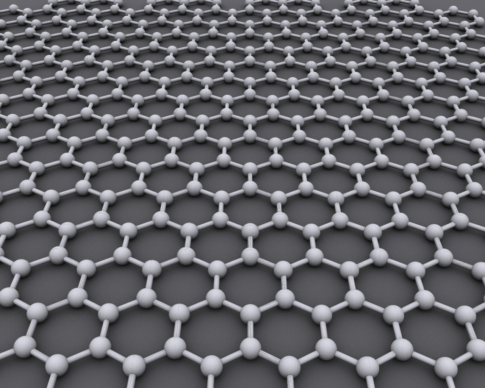

Notícias Cidade
Destaque
conheça o carro de tório
Com o combústível cada vez mais caro(via de exemplo:BRASIL),se tornaria muito prático e fácil e criação de novos metodos(carros ou combustíveis)para amenizar tal realidade,é aqui que apresento o carro de tório(elemento radiotivo,descobero em 1928 recebendo nome em homenagem ao deus nórdico "thoor")do qual em teoria sua tecnologia permitiria o abastecimento a cada100 anos,mas calma não tenha medo,o tório apesar de ser um elemento radioativo possui proṕriedades distintas que o tornam menos radioativo oferencendo mais segurança e não desencadeando reações nucleares,tendo isto em mente o tório mesmo que em poucas gramas teria energia suficiente para carregar um véículo(uma grama possuíndo energia de 28mil litros de gasolina) e desbancar alguns outros tipos de combustíveis onde também os motores destes protótipos pesam cerca de 250KG e podem ser colocados em automóveis.
LEIA MAIS!
THORIO Marie Curie(1867-1934)está de olho em vocês!!!
móléculas de H2O(água)no hemisfério sul da lua
leia parte da matéria da nasa traduzida para o português
O Observatório Estratosférico de Astronomia Infravermelha da NASA (SOFIA) confirmou, pela primeira vez, a presença de água na superfície lunar iluminada pelo sol. Esta descoberta indica que a água pode ser distribuída pela superfície lunar, e não limitada a lugares frios e sombreados. SOFIA detectou moléculas de água (H2O) na Cratera Clavius, uma das maiores crateras visíveis da Terra, localizada no hemisfério sul da Lua. As observações anteriores da superfície da Lua detectaram alguma forma de hidrogênio, mas não foram capazes de distinguir entre a água e seu parente químico próximo, hidroxila (OH). Dados desse local revelam água em concentrações de 100 a 412 partes por milhão - aproximadamente o equivalente a uma garrafa de 12 onças de água - presa em um metro cúbico de solo espalhado pela superfície lunar. Os resultados foram publicados na última edição da Nature Astronomy. “Tivemos indicações de que H2O - a água familiar que conhecemos - pode estar presente no lado iluminado da Lua”, disse Paul Hertz, diretor da Divisão de Astrofísica do Diretório de Missão Científica na Sede da NASA em Washington. “Agora sabemos que está lá. Esta descoberta desafia nossa compreensão da superfície lunar e levanta questões intrigantes sobre recursos relevantes para a exploração do espaço profundo. ” Leia Mais!RAIOS X
Ascendente da Tomografia

Descoberta em 8de novembro de 1895 por WILHELM CONRAD RONTGEN em WUZBURG(Alemanha) sendo a primeira radiografia em dezembro de 1895 tendo com o passar dos anos suas melhorias e aplicações médicas(sendo ascendente da tomografia computadorizada,segue imagem acima),onde em tempos de pandemia vem mostrando grande valor no dignóstico de Covid-19,não excluíndo outros métodos pra sua detecção,e mostrando uma sensibilidade menor(menos informações ou dados) em radiografias de tórax em relação a tomografias de tórax
MUNDO
-

Novas areas de estudo
"neste periodo de pandemia pessoas preucuram novas maneiras de se adaptar e ter novas rotinas!!!"
-
Novas areas de estudo
"raio-x de tórax vêm se motrando muito promissor no diagnóstico de covid-19!!!"
-

conheça o grafeno
"O Grafeno é um material composto por uma fina camada de grafite, e desde sua descoberta, tem atraído os cientistas e a indústria tecnologia por suas infinitas possibilidades de uso.!!!" ...LEIA MAIS!